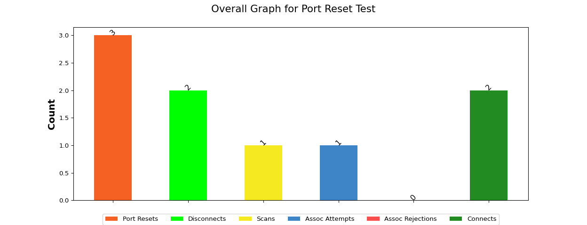
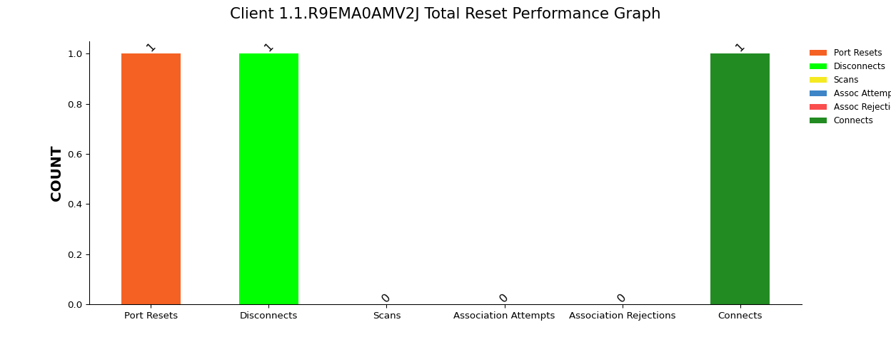
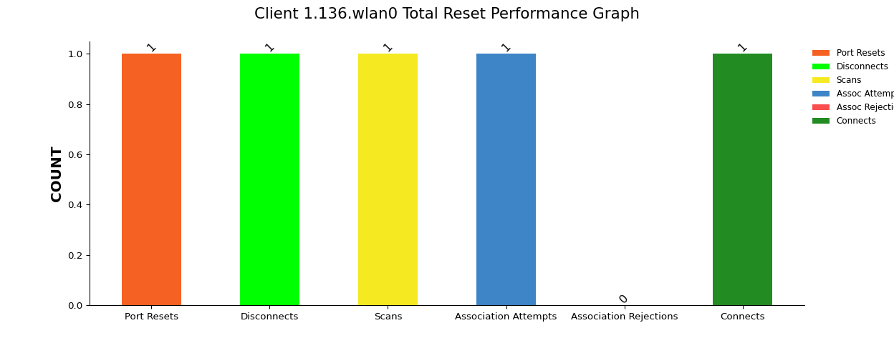
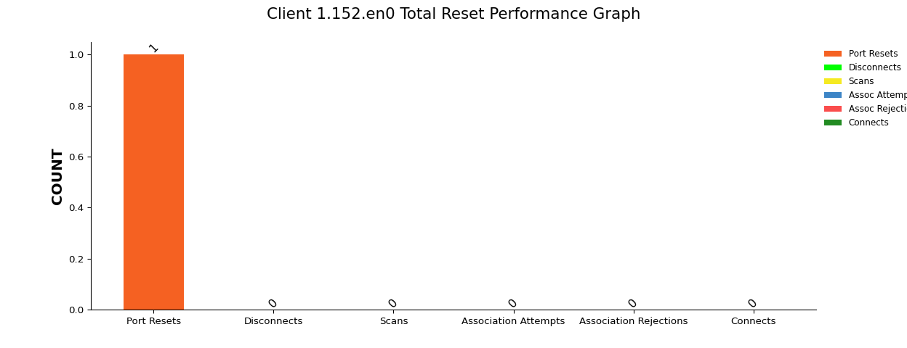

The Port Reset Test simulates a scenario where multiple WiFi stations are created and connected to the Access Point (AP) under test. These stations are then randomly disconnected and reconnected at varying intervals, mimicking a busy enterprise or large public venue environment with frequent station arrivals and departures. The primary objective of this test is to thoroughly assess the core Access Point functions' control and management aspects under stress.
| Basic Test Information |
|
||||||||||||||||||||||||||||||||
The following graph presents an overview of different events during the test, including Port Resets, Disconnects, Scans, Association Attempts, Association Rejections and Connections. Each category represents the total count achieved by all clients.
1. Port Resets: Total number of reset occurrences provided as test input.
2. Disconnects: Total number of disconnects that happened for all clients during the test when WiFi was disabled.
3. Scans: Total number of scanning states achieved by all clients during the test when the network is re-enabled.
4. Association Attempts: Total number of association attempts (Associating state) made by all clients after WiFi is re-enabled in the full test.
4. Association Rejections: Total number of association rejections made by all clients after WiFi is re-enabled in the full test.
6. Connected: Total number of successful connections (Associated state) achieved by all clients during the test when WiFi is re-enabled.

| S.No | Name of the Devices | Hardware Version | Device Type | Port Resets | Disconnects | Scans | Assoc Attemts | Assoc Rejects | Connects |
|---|---|---|---|---|---|---|---|---|---|
| 1 | 1.1.R9EMA0AMV2J | samsung | Android | 1 | 1 | 0 | 0 | 0 | 1 |
| 2 | 1.136.wlan0 | DesktopLatitude5490 | Windows | 1 | 1 | 1 | 1 | 0 | 1 |
| 3 | 1.152.en0 | mac-11.local | Apple | 1 | 0 | 0 | 0 | 0 | 0 |
The below table & graph displays details of samsung device.

| Reset Count | Disconnected | Scanning | Association attempts | Association Rejection | Connected | Connection Time (us) | Remarks |
|---|---|---|---|---|---|---|---|
| 1 | 1 | 0 | 0 | 0 | 1 | 984000 | NA |
The below table & graph displays details of 1.136.wlan0 device.

| Reset Count | Disconnected | Scanning | Association attempts | Association Rejection | Connected | Connection Time (us) | Remarks |
|---|---|---|---|---|---|---|---|
| 1 | 1 | 1 | 1 | 0 | 1 | 0 | NA |
The below table & graph displays details of 1.152.en0 device.

| Reset Count | Disconnected | Scanning | Association attempts | Association Rejection | Connected | Connection Time (us) | Remarks |
|---|---|---|---|---|---|---|---|
| 1 | 0 | 0 | 0 | 0 | 0 | NA | NA |